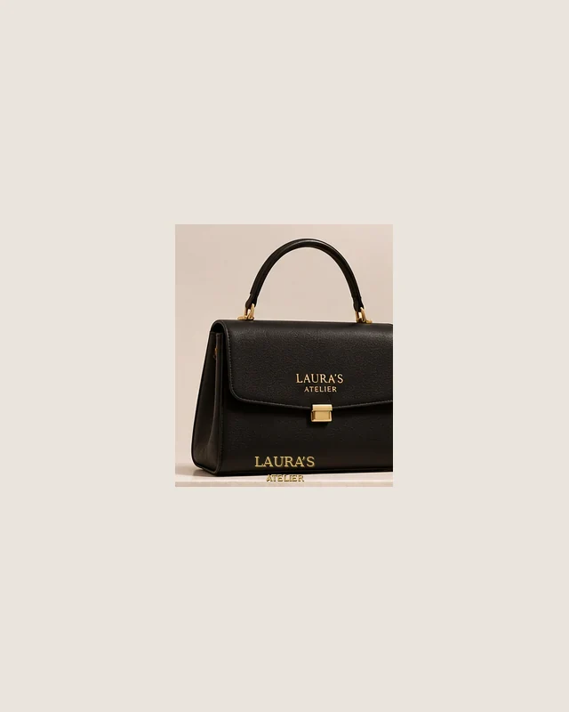

HABLEMOS
Di
hola.
Conoce nuestro concepto creativo. Este sitio es una demostración académica, sin pedidos ni servicio comercial.
CONTACTO
Este es un proyecto académico y no dispone de un canal comercial de atención. Por privacidad, no se publican datos personales.
NOTA
Laura’s Atelier es una marca ficticia creada para un proyecto académico. Los productos y precios son ilustrativos; no se aceptan pedidos.